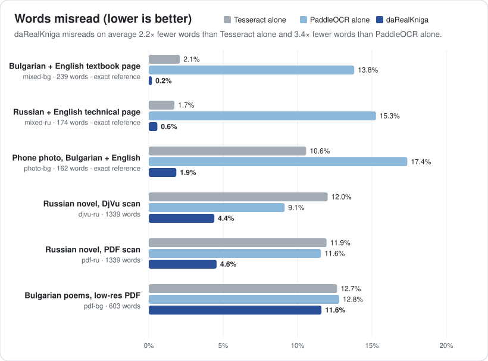

daRealKniga
Turn old books, archives and everyday documents into faithful, searchable digital copies. Made for Slavic languages and English, even mixed on one page.
да = yes, книга = book: “yes, a real book”, with real, searchable text.

A real run: a phone photo in, a searchable PDF out, and plain OCR on the same photo for comparison.
What it does
Searchable PDFs
Turns DjVu books, image PDFs, photos and scans into PDFs you can search, select and copy. It also writes a plain text file and, for DjVu books, a searchable DjVu.
Cyrillic and Latin, mixed
Textbooks, dictionaries and bilingual documents keep each word in its own alphabet. Look-alike letters (а/a, р/p, Н/H) no longer break search.
Photos, not just scans
Curled, tilted, shadowed pages from a phone are flattened and cleaned up first, and every page ends up the same size.
Your language, your computer
The window comes in 31 languages, all Slavic ones included. Everything runs on your computer: your documents never leave it.
For old books and archives
daRealKniga is built for digitising whole books and collections, the way a library or an archive would want them: faithful to the original, consistent, and searchable.
The original stays intact
DjVu scans keep their page images exactly as they are, with an invisible text layer added. A PDF and a plain-text file are written next to them.
Whole books, not just pages
Hundreds of pages are processed in parallel. An interrupted run resumes where it stopped, and a page range lets you try the settings on a few pages first.
Old print, uneven scans
Every page ends up the same size, even when the scans don't match. Tested on Bulgarian and Russian editions from the 1970s, against their existing text.
Catalogue-ready, and private
Title and author are stored in the PDF. Everything runs on your own computer: collections never leave it, and the formats are open (PDF, DjVu, plain text).
Better than plain OCR
Every sample is read three ways from the same page images: by Tesseract alone, by PaddleOCR alone, and by daRealKniga, which cleans the pages up, combines both engines word by word and corrects what they get wrong.
daRealKniga misreads on average 2.2× fewer words than Tesseract alone and 3.4× fewer words than PaddleOCR alone.

| Sample | Tesseract alone | PaddleOCR alone | daRealKniga |
|---|---|---|---|
| Bulgarian + English textbook pagesynthetic scan of a language-textbook page: Bulgarian with English words and sentences | 97.9% | 86.2% | 99.8% |
| Russian + English technical pagesynthetic scan of a manual page: Russian with English terms, commands and names | 98.3% | 84.7% | 99.4% |
| Phone photo, Bulgarian + Englishsynthetic phone photo of a travel-guide page (curled, in perspective, uneven light): Bulgarian with English names and phrases | 89.4% | 82.6% | 98.1% |
| Russian novel, DjVu scanDjVu scan mode, Russian prose (Вазов, Под игом, 1970) | 88.0% | 90.9% | 95.6% |
| Russian novel, PDF scanPDF of the same edition (cropped flat scans); reference = the DjVu text layer | 88.1% | 88.4% | 95.4% |
| Bulgarian poems, low-res PDFBulgarian poetry and prose, 133 dpi two-page spreads (Вазов, Събрани съчинения т. 4, 1974); the reference has many OCR errors of its own | 87.3% | 87.2% | 88.4% |
Word accuracy: the share of words read exactly right. A Latin letter in place of its Cyrillic look-alike counts as an error, because the word can no longer be found by search.
Words plain OCR got wrong
| Printed | Tesseract alone | PaddleOCR alone | daRealKniga |
|---|---|---|---|
| а | a | – | а ✓ |
| open | ореп | ореn | open ✓ |
| монастырских | мопастырских | мопастырскнх | монастырских ✓ |
| внимание | впимание | вшнмание | внимание ✓ |
| наполняя | паполпяя | паполняя | наполняя ✓ |
| стену | степу | – | стену ✓ |
| них | пих | пих | них ✓ |
| са | ca | са ✓ | са ✓ |
| нов | HOB | нов ✓ | нов ✓ |
| от | OT | от ✓ | от ✓ |
| or | ог | or ✓ | or ✓ |
| да | na | да ✓ | да ✓ |
Highlighted letters come from the wrong alphabet: they look identical on screen, but the word can't be searched.
Measured 2026-10-08 with daRealKniga 0.3.0, Tesseract 5.3.4 and PaddleOCR 3.7.0. All three read the same page images with the same OCR models.
The samples, the scoring and how to rerun it yourself are described in the README.
Get it
Free and open source (MIT). The first run downloads the OCR models: about 45 MB, plus 10–15 MB per language.
Linux
A single file with everything included. Make it executable and double-click it. Works on 64-bit distributions from about 2022 on.
Download the AppImagemacOS work in progress
Apple Silicon and Intel. Installed with Homebrew and a few Terminal commands.
Install on macOSWindows work in progress
64-bit Windows 10 and 11. Installed with a few PowerShell commands.
Install on WindowsmacOS and Windows support is new: if something doesn't work, or the instructions are unclear, please tell us. Feedback is much appreciated.
Using it
Open the window, drop in a document, pick the text language and press Make searchable. Or use the command line (drk is short for darealkniga):
drk make book.djvu --lang bul+eng | A Bulgarian textbook with English in it |
drk make book.pdf --lang bul --title "Под игото" --author "Иван Вазов" | A Bulgarian book, with its title and author stored in the PDF |
drk make receipt.jpg --lang ukr+eng | A single photo: a receipt, a letter, a note |
drk make phone-photos/ --lang rus | A folder of page photos, in page order |